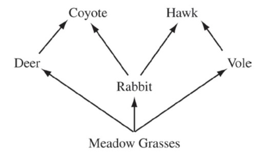

The following is a food web for a meadow habitat that occupies 25.6 km2. The primary producers’ biomass is uniformly distributed throughout the habitat and totals 1,500 kg/km2.

Developers have approved a project that will permanently reduce the primary producers’ biomass by 50 percent and remove all rabbits and deer.
Which of the following is the most likely result at the completion of the project?